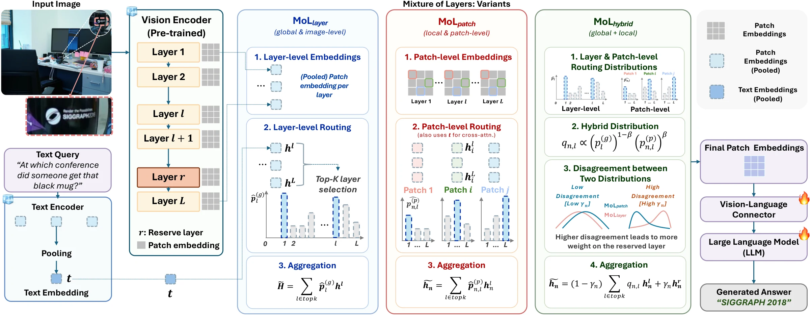
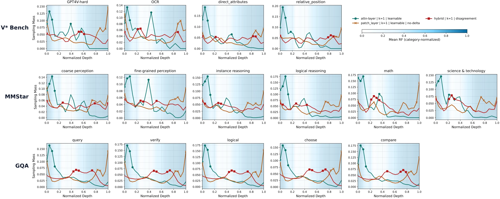
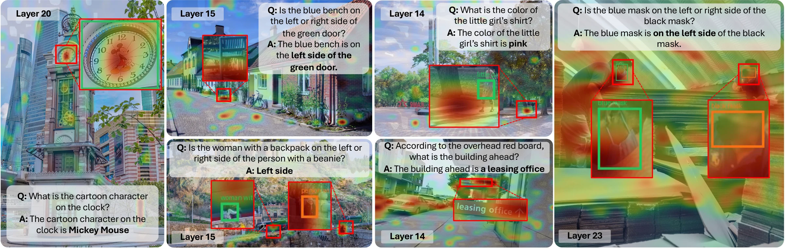

The question is part of the representation.
Text-conditioned hybrid routing scores 84.03% on V*, compared with 77.31% for image-only routing in the text-encoder ablation. Visual evidence becomes more useful when the model knows what to look for.
A closer look at visual reasoning
Dynamic Layer Routing
for Visual Reasoning
The details are already there.
Let the question decide where to look.
V* accuracy over baseline
Vicuna-13B · DINOv2 w/ Txt · hybridV* with two vision encoders
Vicuna-13B · CLIP + DINOv2 w/ TxtMore depth, same sequence length
Routing preserves the visual token count01 / Motivation
Recognizing a scene isn’t the same as reading a tiny sign inside it.
Vision encoders represent an image at many depths: from localized visual details to broader semantic context. Yet many multimodal models read only the final or penultimate layer, or combine a fixed set of layers for every question.
Mixture of Layers makes that choice adaptive. A text-conditioned router selects and combines intermediate representations, giving the language model visual features that better match the question.
Every question
The same visual layer
A specific question
A relevant mix of layers
02 / The method
One pre-trained encoder. A family of visual representations. Three ways to route between them.
Combine image-level and patch-level routing with a weighted product of experts. A learned gate uses their disagreement to blend in a stable reserve layer.
The reserve is the final or penultimate representation used by the original backbone.
Extract intermediate vision features and an aligned text-query embedding.
Score candidate layers against the question and select the top-k representations.
Mix the selected features, project them into the language space, and answer.

03 / Experiments
Evaluated across seven fine-grained visual reasoning benchmarks, three language backbones, and multiple vision encoders.
Scores from the manuscript’s main backbone comparison. Deltas are percentage points, calculated from the displayed scores. Results vary by benchmark and backbone.
Apply hybrid routing independently to CLIP and DINOv2 w/ Txt, upsample the DINOv2 stream, and fuse the projected features into 576 visual tokens.
Against Interleaved-MoF, this full-system comparison improves V* by 7.99 points. HRBench4K and RealWorldQA decrease; encoder and fusion differences mean this is not a routing-only ablation.
V* accuracy (%) · Vicuna-13B backbone
04 / Findings & insights
Routing behavior, receptive fields, and ablations help explain when adaptive visual representations are useful.
In the reported CLIP analysis, image-level routing emphasizes early, detail-preserving layers. Patch-level routing places more mass on later, contextualized features. Hybrid routing balances these preferences.
Early ← encoder depth → Late
Qualitative summary
Text-conditioned hybrid routing scores 84.03% on V*, compared with 77.31% for image-only routing in the text-encoder ablation. Visual evidence becomes more useful when the model knows what to look for.
Removing the reserve layer reduces accuracy across all five reported reserve-ablation benchmarks. The largest drop is 5.13 points on HRBench4K (43.88 → 38.75).
Small selections can be enough. In the k ablation, hybrid routing achieves 84.03 on V* at k = 1, versus 76.89 at k = 2 and 67.65 at k = 4. The best k depends on the task and router.
05 / A closer look
Selected-layer self-attention maps highlight text, subtle attributes, and spatial relationships in the paper’s qualitative examples.

Better visual reasoning can start with
choosing the right representation.
Build on this work
BibTeX for the current research manuscript. Code repository currently requires access.
@misc{kim2026mixtureoflayers,
title = {Mixture of Layers: Dynamic Layer
Routing for Visual Reasoning},
author = {Kim, Jeonghwan and Stoica, Sofia and
Chung, Jiwan and Blume, Ansel and
Ha, Hyeonjeong and Wang, Zhenhailong and
Dong, Xin Luna and Ji, Heng},
year = {2026},
note = {Research manuscript}
}